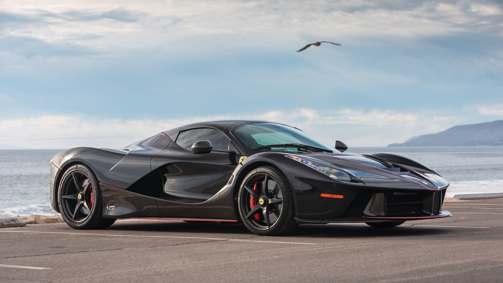

Nas palavras de Luca Di Montezemolo, o resultado da "expressão máxima do que define a nossa empresa" é a Ferrari LaFerrari, baseada em diversos modelos anteriores e na experiência adquirida ao longo dos anos na Fórmula 1. Limitada em 499 unidades, a LaFerrari faz parte do icônico trio de hypercarros híbridos de 2013, sendo acompanhada pela McLaren P1 e pela Porsche 918. Com um V12 de 6.3 litros, um motor elétrico auxiliar e uma aerodinâmica quase perfeita, a LaFerrari proporciona a seu piloto uma experiência de direção incrível. Apesar de seus inúmeros controles eletrônicos, a LaFerrari é capaz de agradar qualquer um, sendo prazerosa de guiar tanto no trânsito caótico das grandes cidades quanto no asfalto liso das pistas de corrida. Assim como a Ferrari fez em 1987 e em 1995, a LaFerrari prova que, mesmo após tantos anos, os italianos ainda sabem - e sempre saberão - como criar carros que quebram paradigmas e recordes.